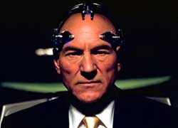
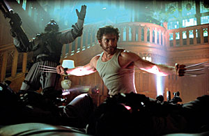

|
|
Movies of
The plot of the first movie basically follows bad guy Magneto's scheme to mutate the world's leaders and Professor Xavier's X-Men's attempts to thwart him. Of course it's much more complicated than that with all the characters introducing themselves and their powers along the way. The mutants featured in the first movie are Professor Xavier, Wolverine, Storm, Cyclops, Jean Grey and Rogue fighting for the good guys and Magneto, Sabretooth, Mystique, and Toad playing the bad guys. We also get to see a few familiar mutants as youngsters learning at Professor Xaviers school for the gifted, these include Iceman, Pyro, and Shadowcat. Magneto decided that his machine he had made to mutate the world leaders that needed a powerful mutant to power it was too dangerous for him himself to be that power source, so he targeted loner Rogue a mutant who only needs to touch another person, human or mutant to drain away their power into herself. Rogue had been picked up as a hitchhiker by Wolverine another loner mutant whose powers had made him feared and hated. The pair were attacked by Sabretooth, one of Magneto's associates only to be rescued by Storm and Cyclops and taken to the Xavier mansion. Using Mystique to infiltrate the mansion Magneto planted doubts in Rogues head as to her place in the mutant academy and she fled pursued by Wolverine. Wolverine caught up with her on a train where they were confronted by Magneto, with his control of all things magnetic, Wolverines metal infused body left him helpless as Magneto took Rogue to Liberty Island to continue his plans. In a final confrontation Rogue was placed in the machine to mutate the world's leaders attending a world summit in New York only to be freed when Storm and Jean Grey levitated him onto the Statue of Liberty's torch and he smashed the machine apart. Magneto, left helpless after he surrendered his powers to Rogue was captured and placed in a plastic prison where his mutant powers could have no affect. When it came to making the second X-Men movie more attention could be placed on the story and action as the characters had already been introduced during the course of the first film. The movie starts with a bang as new (to the big screen) mutant Nightcrawler infiltrates the White House the way only he can, by teleportation and threatens the life of The President. This leads to the President calling on General William Stryker who has procured plans to the Xavier mansion and has uncovered it's true guise, as the base of operations for the X-Men. Stryker got these plans by drugging the now imprisoned Magneto and interrogating him, the drug he uses on Magneto also happens to be the same one that he used on Nightcrawler to engineer the attack on the President. As Jean Grey and Storm head out in search of Nightcrawler and Xavier and Cyclops go to talk to Magneto about his possible role in the attack on President only to be captured by Stryker the Xavier mansion is attacked by Strykers commando's with only Wolverine to defend the children. Wolverine and the children are forced to flee when they are hopelessly out numbered only to eventually meet up with Jean, Storm and Nightcrawler. So the X-Men, minus Xavier and Cyclops, and with their new recruit Nightcrawler are forced into an uneasy alliance with Magneto who had escaped from his plastic prison with the help of Mystique. They discover Strykers plans to build a replica of Cerebro, Xaviers tool for harnessing his mental powers in order to locate every mutant on the planet, and use Xavier to locate and kill all mutants. As the X-Men infiltrate Strykers base Wolverine faces up to Stryker and his mutant accomplice Lady Deathstrike who is also under the influence of his mind control drug. Wolverine learns some of his forgotten past, that he enrolled in a Mutant X project run by Stryker who infused his bones with the indestructible metal Adamantium to compliment his mutant abilities. Wolverine fights Lady Deathstrike, who's mutant powers are remarkable similar to his own, and ultimately kills her. Meanwhile Magneto engineers Xavier to use Cerebro to target all humans for destruction rather than mutants and flees the base with Mystique and the young Pyro who had become disillusioned with Xaviers rules and restrictions on his mutant powers. Storm and Nightcrawler teleport into Strykers Cerebro and save Xavier from killing all humans. The X-Men flee the base as the dam where it is situated bursts and kills General Stryker and Wolverines hopes of finding out more of his clouded past, in the final melee as the X-Men make their escape they also suffer a loss, that of Jean Grey.
|